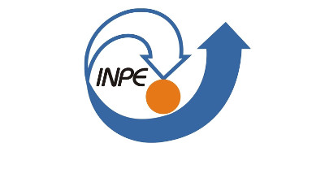
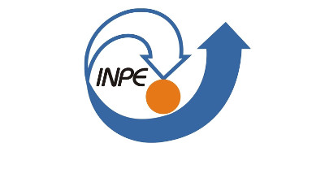

Contents © 2013 Flávio Codeço Coelho - Powered by Nikola
Haroldo Lopes dos Santos
DATASUS
O Brasil conta com expressivo acervo de dados, disponibilizados pelos diversos sistemas de informação de saúde, construídos ao longo dos últimos 37 anos, com motivações e períodos distintos. Esses dados são coletados diariamente nos eventos relacionados à saúde: internação hospitalar, atendimento ambulatorial, notificação de agravos, imunização, distribuição e dispensação de medicamentos, óbitos, nascimentos, marcação de consulta médicas, tratamentos de alta complexidade, vigilância sanitária, vigilância ambiental, além dos processos que envolvem o repasse de recursos financeiros entre os três níveis de gestão, federal, estadual e municipal. Pode-se falar que a saúde é tão transversal na esfera governamental, que podemos incluir dados meteorológicos, climáticos, socioeconômicos e demográficos, produzidos por instituições que não são ligadas diretamente à área da saúde, mas que contribuem para a análise a situação de saúde no país.
Com todos os avanços que o Brasil fez nos últimos 25 anos para construção de um sistema de saúde único, dentro dos princípios da universalidade e integralidade, ainda são desafios para gestão do SUS atender necessidades básicas da população, como colocar médicos nos serviços públicos de saúde, por exemplo.
A qualidade dos sistemas de informações em saúde é consequência desse processo; onde os serviços são bem estruturados, os sistemas de informações tem boa qualidade de dados e cobertura; onde a carência de serviço de saúde, eles sofrem com problemas básicos desde a alimentação de dados, comprometendo o uso das informações no processo de tomada de decisão.
Ao longo das duas últimas décadas o SUS construiu ferramental de tecnologias da informação, para atender as necessidades de gestores, profissionais de saúde e pesquisadores, na análise de situação, na vigilância e no monitoramento da saúde da população. São considerados casos de sucesso, a disponibilização dos microdados em formato universal (dbf), aplicativos para recuperação de informação (TABWIN e TABNET), uso intensivo da Internet para acesso as informações de saúde em painéis de gráficos e mapas (SAGE, Mapa da Saúde, Monitoramento de Mortalidade Materna e Infantil), Mineração de Dados de Assistência à Saúde (Datamining), além de crescimento expressivo do uso de ferramentas de inteligência de negócios nos diversos sistemas de informações. Além disso, o SUS avançou na qualificação das informações, através da Metodologia RIPSA para análise de situação de saúde (IDB e Informes científicos), na construção da Matriz de Indicadores para monitoramento do COAP. O MS tem usado o IDSUS para ranking dos serviços de saúde ofertados por estados e municípios.
Por fim, nos últimos três anos os processo de qualificação do cadastro de usuários (CADSUS) e de estabelecimentos de saúde e profissionais (CNES), aponta na direção da interoperabilidade entre os diversos de informações. Soma-se a esse processo a discussão do conceito e-Saúde, enquanto mudança nos processos de trabalho em saúde que favoreça o uso mais intenso da TI, a fim de melhorar a assistência, atenção, promoção, monitoramento e vigilância em saúde.